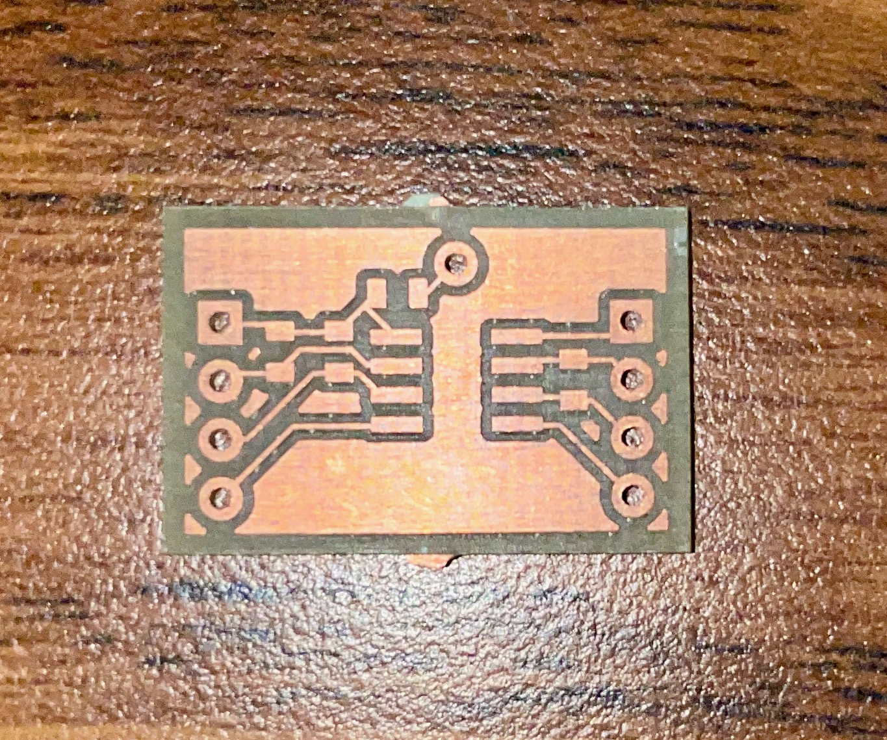
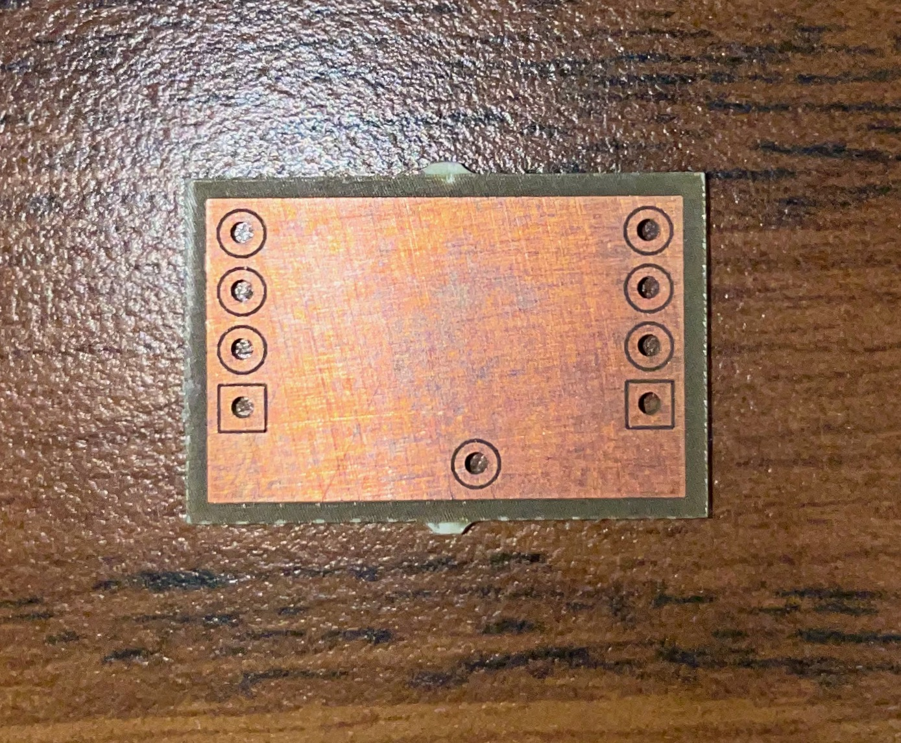

Fall 2021 Project - PCB Fabrication
My first personal project at Georgia Tech

A close up of the front of the completed PCB
Intro
I was first introduced to PCBs in 2019, it was to design a control panel for our robot. Being a freshman, I was more of an onlooker in the process than a person who actually touched the PCB. However, seeing the different colors and lines with symbols, letters, and numbers everywhere had me intrigued. Finally, 2 years later I was provided the resources to take a deeper dive into the fabrication of the PCBs. Georgia Tech has several maker spaces, the most prevalent one for undergrad students is the Interdisciplinary Design Commons also called the HIVE. There they have only 2 machines that require a certification to use, the Protomat and the Protolaser. I decided since I will be using The HIVE for the next 4 years I may as well get certified to use every machine they have. So, I started with my goals, to learn PCB design and fabrication. Both goals were achieved to some degree, I watched about 2 and 1⁄2 hours of online videos on PCB design and learned about the programs used to design PCBs, the 2 main programs I learned to use were Eagle and EasyEDA design. Then came the guide videos, I navigated SUMS to The HIVE’s training videos and watched both parts taking note of every step. After taking the readiness test, I scheduled a checkoff for two weeks later.

The back of the completed PCB
Fabrication
I got to The HIVE and met up with a Peer Instructor (PI) named Madeline, she watched over my every step and wouldn’t tell me if I was doing anything right but would stop me if I was going to damage the machine. She was a 4th year EE major and told me about all the different things she’s used the Protolaster for. It was straightforward, and besides one alignment oversight I had no issues creating the small template PCB and passing the checkoff now granting me access to all the machines at the Interdisciplinary Design Commons.
Conclusion
This project taught me more about the different paths I can take in the ECE field and has made me question further how sure I am on what threads I want to go into. Hearing how Madeline was able to use the Protolaser to make antennas for communication sounds very interesting to me while also understanding the different materials they use and how tiny they can make the components of the PCB also interested me. Unfortunately, both concepts relate to different threads so eventually I will have to choose what I truly want to do. As for the discovery project, I can say I learned a lot in a relatively short time, my next steps are to carry this idea forward. I will attempt to have my own personally discovery project next semester where I learn to do complex 3d printing using some of the resin 3d printers at The HIVE or other maker spaces.